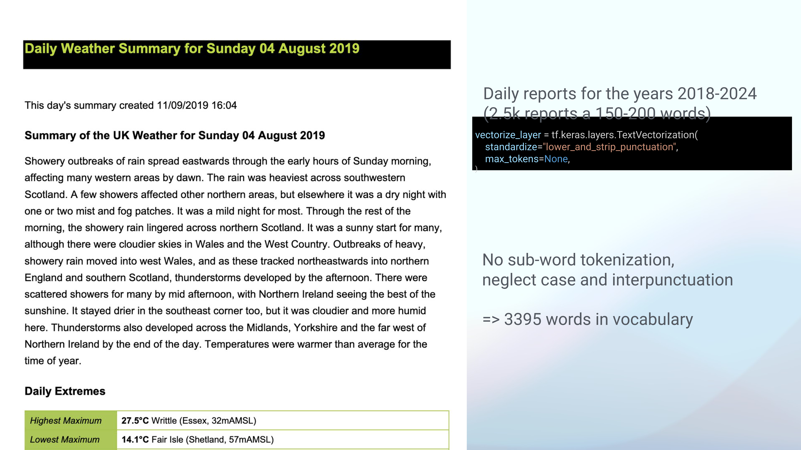

15 Time-aware large language models towards a novel architecture for historical analysis
Overview
This presentation introduces a novel architectural approach for Large Language Models (LLMs), which the speaker terms the Time Transformer. The innovation directly addresses a fundamental limitation of current models, which derive only an implicit understanding of time from statistical patterns within their training data. The speaker highlights that whilst existing models demonstrate remarkable capabilities, their lack of explicit temporal conditioning can lead to inconsistencies when processing information that evolves, such as historical facts or linguistic trends.
The proposed Time Transformer integrates a dedicated temporal dimension directly into the token embeddings, thereby enabling the model to learn and reproduce changing linguistic patterns as a direct function of time. The authors validated this concept using a small generative LLM trained on a highly constrained dataset of Met Office weather reports. Their work demonstrates the model’s ability to capture and reproduce time-dependent linguistic shifts with high efficiency. The presentation explores the theoretical underpinnings of this approach, details the model architecture and data preparation, and presents two experiments demonstrating its efficacy in learning synthetic temporal drifts. Furthermore, it outlines potential applications, including historical analysis and instruction-tuned models, whilst acknowledging challenges related to fine-tuning and data curation.
15.1 Temporal Limitations in Current LLMs

Current Large Language Models possess an inherently implicit understanding of time, derived statistically from the vast textual corpora used for their training. Whilst these models exhibit a profound grasp of temporal concepts, their comprehension stems from subtle cues embedded within the data rather than from explicit temporal conditioning. The authors contend that explicit time awareness would demonstrably enhance their utility, particularly within historical analysis and across a broader spectrum of applications.
Consider, for instance, two sentences that differ solely in their temporal context: ‘The primary architecture for processing text through Neural Networks is LSTM’ and ‘The primary architecture for processing text through Neural Networks is Transformer.’ Without explicit temporal information, these statements, representing different states of affairs in 2017 and 2025 respectively, directly contradict one another within an LLM’s training data. The model must then arbitrarily favour one, inevitably making an error regarding the other.
Furthermore, a discernible recency bias often influences LLM predictions, favouring more contemporary information. Current methods, such as prompt engineering, merely attempt to exploit the model’s implicit temporal understanding, a process the speaker likens to ‘fishing in the dark’ for desired outcomes. To overcome these limitations, the authors propose integrating time directly into the token embeddings of Transformer-based LLMs. This architectural modification aims to render LLMs explicitly time-aware, enabling them to learn and reproduce evolving linguistic patterns as a direct function of time.
15.2 Formalising Temporal Dependence
Fundamentally, Large Language Models operate by estimating the probability distribution over their vocabulary for the next token, conditioned on a sequence of preceding tokens. This process is mathematically represented as p(x_n | x_1, …, x_{n-1}). In the real world, however, the likelihood of a token appearing is not static; it is intrinsically dependent on time, thus becoming p(x_n | x_1, …, x_{n-1}, t).
Extending this principle, the joint probability for an entire sequence of tokens uttered at a particular time t is expressed as the product of these conditional probabilities: p(x_1, …, x_n | t) = ∏ p(x_k | x_1, …, x_{k-1}, t). Despite this inherent temporal variability, current LLM training processes frequently treat these probability distributions as static. Consequently, during inference, these models can only reflect temporal drift through in-context learning, a mechanism that relies on the immediate context provided rather than an explicit, integrated understanding of time.
15.3 Modelling Temporal Drift

A significant challenge in current LLM training lies in the treatment of inherently time-dependent probability distributions as static. This simplification means that whilst the real-world likelihood of a token is a direct function of time—for instance, the probability of ‘transformer’ completing a sentence was effectively zero in 2017—LLMs primarily reflect such temporal drift only through in-context learning during inference.
To improve upon this, the authors sought more effective methods for modelling these dynamic, time-dependent probability distributions. Existing strategies, such as ‘time slicing’—where distinct models are trained for specific temporal segments—prove remarkably data-inefficient, as they assume static distributions within those slices. A more streamlined and integrated approach is therefore imperative.
15.4 The Time Transformer Concept
To overcome the limitations of implicit temporal understanding, the authors propose an innovative solution termed the Time Transformer. This concept centres on a remarkably simple yet profound architectural adjustment: reserving a single dimension within the token embedding space specifically for time. This dedicated dimension explicitly conveys the utterance date for each token sequence, thereby providing direct temporal context.
The initial implementation employs a non-trainable, min-max normalised ‘day of the year’ as the time embedding. The team strategically chose this feature to exploit natural seasonal variations inherent in their chosen dataset, such as the prevalence of snow in winter or heat in summer. The framework, however, readily accommodates alternative time embeddings as required.
For their proof of concept, the authors selected Met Office weather reports as the primary dataset. This text corpus is characterised by its limited vocabulary and simple, repetitive language, making it an ideal candidate for initial validation. The UK’s national meteorological service issues these daily reports, and historical data remains accessible through its digital archive.
15.5 Dataset Curation and Processing

The team systematically acquired the dataset by scraping daily weather reports from Met Office PDFs spanning the years 2018 to 2024. This process yielded approximately 2,500 reports, each comprising between 150 and 200 words. For text processing, they employed tf.keras.layers.TextVectorization, standardising the input by converting text to lowercase and stripping punctuation.
Crucially, the tokenization process avoided sub-word segmentation and deliberately neglected case and interpunctuation, reflecting the inherently simple nature of the language. This straightforward approach resulted in a remarkably concise vocabulary of just 3,395 unique words across the entire seven-year corpus. An illustrative example, the Daily Weather Summary for Sunday 04 August 2019, details showery rain and mist, whilst its Daily Extremes table highlights a highest maximum temperature of 27.5°C recorded in Writtle, Essex.
15.6 Baseline Model Architecture

To establish a baseline for language pattern learning, the authors constructed a modest-sized, decoder-only Transformer architecture, which they term the Vanilla model. This architecture processes input through an Embedding Layer (d_model=512), followed by Positional Encoding and a Dropout layer (rate=0.1). Subsequently, the input traverses a stack of four Multi-Head Attention Decoder Blocks. The final output from these layers feeds into a Dense Layer, sized to the vocabulary, which produces the model’s predictions.
This compact model contains 39 million parameters, a stark contrast to models such as GPT-4, which commands 1.8 trillion parameters. Despite its modest scale, the model trains with remarkable efficiency on an HPC cluster, completing each epoch in merely 11 seconds. During training, its accuracy steadily improved, with validation accuracy stabilising around 0.38, demonstrating its capacity to reproduce the language patterns observed in the weather reports.
15.7 Integrating the Temporal Dimension
The established Vanilla model demonstrates a robust capacity to reproduce the language of weather reports. When provided with a seed sequence such as ‘During the night, a band…’, the model autoregressively generates coherent and contextually relevant text that closely mimics actual forecasts.
The transition to a Time Transformer involves a remarkably minimal architectural adjustment. Instead of embedding all information within a 512-dimensional latent semantic space, the authors reserve one dimension specifically for temporal data. This dedicated dimension explicitly informs each token about the precise date on which its sequence was uttered. The current implementation employs a non-trainable, min-max normalised ‘day of the year’ as this time embedding, a choice driven by the desire to leverage natural seasonal variations inherent in weather data.
15.8 Dataset Suitability for Time-Aware Models

To test their proposed time-aware model rigorously, the authors required a dataset characterised by restricted, repetitive language and a small vocabulary, thereby simplifying the task of pattern learning. The UK Met Office weather reports proved an ideal choice, being readily accessible online from the national meteorological service. The team also identified the TinyStories dataset as a potential alternative for future investigations.
The data, originally presented as monthly PDFs, was systematically scraped for the period spanning 2018 to 2024, yielding approximately 2,500 reports. The intentionally simple tokenization process, which eschewed sub-word segmentation and neglected case, resulted in a compact vocabulary of just 3,400 words. This linguistic simplicity makes the dataset an excellent testbed for isolating and analysing the model’s ability to learn temporal dependencies.
15.9 A Comparative Architecture
The Time Transformer represents a minimal yet impactful architectural adjustment to the standard Transformer decoder. In a conventional Vanilla Transformer, the input flows directly into an Embedding Layer (d_model=512), followed by Positional Encoding, Dropout, and a series of Decoder Layers before the final output.
Conversely, the Time Transformer introduces two distinct inputs: textual data and temporal data. The textual input undergoes embedding into a d_model of 511, whilst the temporal data is embedded into a dedicated d_model of 1. These two embedded streams are then concatenated, maintaining the overall embedding dimension, before proceeding through the identical sequence of Positional Encoding, Dropout, and Decoder Layers. The time dimension itself is implemented as a non-trainable, min-max normalised ‘day of the year’. This explicit integration directly addresses the challenge that real-world token likelihoods are inherently time-dependent, a dynamic often overlooked by conventional training processes.
15.10 Experiment 1: Synonymic Succession

To assess the Time Transformer’s capacity for learning temporal drift efficiently, the authors conducted an experiment they term synonymic succession. This involved injecting a synthetic, time-dependent drift directly into the training data: the word ‘rain’ was progressively replaced by ‘liquid sunshine’ throughout the year. The objective was to ascertain whether the model could reproduce this engineered temporal dependence in its predictions.
The probability of this replacement followed an S-shaped curve, commencing near zero in January and ascending to approach 1.00 by the year’s end. Analysis of monthly occurrences in the generated sequences clearly demonstrated the model’s successful capture of this drift. Occurrences of ‘Rain’ predominated in the earlier months, whilst ‘Liquidsunshine’ became significantly more frequent and eventually dominant in the latter half of the year.
15.11 Experiment 2: Collocation Fixation
A second experiment, described as ‘changing a weather pattern’ or fixation of a collocation, further investigated the model’s ability to capture temporal shifts. This involved injecting a synthetic change in co-occurrence: the pattern ‘rain’ followed by any word other than ‘and’ was progressively altered to ‘rain and snow’. Linguistically, this process simulates the fixation of a collocation, akin to an established phrase such as ‘bread and butter’.
The results, visualised through monthly comparisons, clearly demonstrated the injected temporal shift. Occurrences of ‘Rain Only’ were notably higher in the first half of the year, whilst ‘Rain and Snow’ became significantly more frequent in the latter half. Furthermore, an analysis of attention weights revealed that the token ‘snow’ consistently exhibited the highest attention on ‘rain’, indicating that the model successfully learned this evolving co-occurrence pattern.
15.12 Conclusions and Future Directions

The conducted research establishes a clear proof of concept: Transformer-based models can be efficiently rendered time-aware by integrating a dedicated temporal dimension within their token embeddings. This innovation opens several compelling applications. A foundational Time Transformer, for instance, could provide an exceptional basis for downstream tasks involving historical data. Moreover, an instruction-tuned variant would empower users to ‘talk to a specific time’, potentially yielding superior results even in common usage.
Beyond temporal dynamics, the methodology readily extends to modelling dependencies on other contextual dimensions, such as country or genre. Future research endeavours include benchmarking this approach against explicit time-token methods and testing for potential increases in training efficiency. Nevertheless, challenges persist. Uncertainty surrounds the feasibility of fine-tuning due to the architectural modifications. Furthermore, the approach necessitates a departure from metadata-free self-supervised learning, plunging the team into the complexities of data curation.
15.13 Supplementary Resource

A supplementary resource, specifically a ChatGPT conversation, is available for further exploration at the following URL: https://chatgpt.com/c/67b8237a-2a48-8012-9862-80af84830a17.